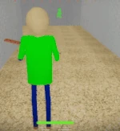
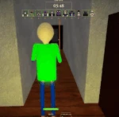

|  Baldi places a notebook down onto his current position with a distinctive "HA HA HAAA!". If any player touches the notebook, they will get a math equation on their screen as well as a timer. If they answer the equation correctly before time runs out, the round's time decreases and the player will take 5 damage. If the player answers incorrectly or runs out of time, they take 40 damage, and the round's timer increases. Either way, Baldi's speed will increase. Has an 11 second cooldown |
 Baldi places a tape player onto his current position. The tape will play a loud noise, causing every player around the tape to be highlighted in green. The noise from the tape also muffles Baldi's ruler sound, but not when Baldi uses his M1. Lasts for 15 seconds. Has a 23 second cooldown. |